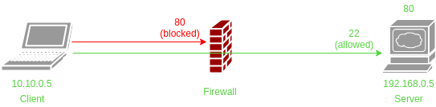

SSH
Tunneling, port forwarding and proxy tutorial
| Author: | Tatu Ylönen |
| License: | / |
| Software: | SSH |
| Date created: | 1995 |
| Updated: | Yes |
| Website: | SSH Wiki |

0xL1NK#~ SSH Wiki
Last updated: 09 april 2019
Description
Secure Shell (SSH) is a cryptographic network protocol for operating network services securely over an unsecured network. Typical applications include remote command-line login and remote command execution, but any network service can be secured with SSH.
SSH provides a secure channel over an unsecured network in a client–server architecture, connecting an SSH client application with an SSH server. The protocol specification distinguishes between two major versions, referred to as SSH-1 and SSH-2. The standard TCP port for SSH is 22. SSH is generally used to access Unix-like operating systems, but it can also be used on Microsoft Windows. Windows 10 uses OpenSSH as its default SSH client.
SSH was designed as a replacement for Telnet and for unsecured remote shell protocols such as the Berkeley rlogin, rsh, and rexec protocols. Those protocols send information, notably passwords, in plaintext, rendering them susceptible to interception and disclosure using packet analysis. The encryption used by SSH is intended to provide confidentiality and integrity of data over an unsecured network, such as the Internet, although files leaked by Edward Snowden indicate that the National Security Agency can sometimes decrypt SSH, allowing them to read the contents of SSH sessions.
SSH Tunneling
- Local Port Forwarding
- Remote Port Forwarding
- Dynamic Port Forwarding

The client wants to access a resource on the server in a different subnet, let's say a webserver (port 80), but he's denied by the firewall. The firewall denies all incoming traffic, except for SSH on port 22. The client is allowed to SSH to the server, and we can leverage this with the command below.
# SSH Tunnel to bypass firewall restriction on port 80 ssh -L 8080:192.168.0.5:80 remoteuser@192.168.0.5 # Syntax ssh -L <LPORT>:<RHOST>:<RPORT> user@<RHOST>
The command will create an SSH tunnel on port 22 and route all traffic through this tunnel to the server. This means that if you execute the command below, then navigate to http://localhost:8080 in a browser, you will be able to navigate to the webserver on port 80 through the SSH tunnel. The green arrow in the schema above represents the SSH tunnel.
** For more information, check out the extra links and sources. **